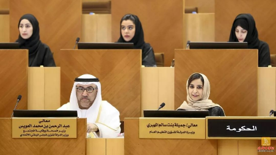

全球地区热力图

女性参政率在国家和大洲之间也有显见的差异。此图绘制了2021年各地区女性的参政率水平，可以看出， 北欧地区的女性参政水平最高，南美洲西部和非洲南部也有较为突出的女性参政水平，北美洲、大洋洲普遍水平较高， 而地中海沿岸、非洲大部和亚洲及俄罗斯地区则在女性参政水平上稍显落后。多数女性参政水平较高的国家和地区都有参政配额制、 最低比例制等政策作为提高女性参政比例的制度保障，这些国家也在就业、教育、社会保障等层面多重发力，为女性在政坛的发展提供更完善的条件。
图源联合国，摄于联合国会议
世界经济论坛发布2022年度《全球性别差距报告》，报告使用全球性别差距指数（Global Gender Gap Index, GGGI），将“经济参与和工作机会（Economic participation and opportunity）”“教育（Educational attainment）”“健康与生存（Health and survival）”“政治赋权（Political empowerment）”四个维度纳入指数计算贡献，从而衡量全球及各国性别差距（Gender gap）
注：国家议会中的女性占比以及参政比指议会中女性席位占总席位的比例，不等于参政女性在全体人口中的比例
二十年来，世界人口性别比例较为均衡，男女比例基本持平，在这二十年间女性参政比例也稳步上升，但参政性别比例远不及人口性别比例这般平衡。2020年，世界范围内的女议长比例增长到20.5%，但四分之三的议会席位仍由男性占据。女性投身政治领域的比例虽有进步，但仍然不足。
联合国妇女署执行主任努卡说：“更多的女性担任高级政治决策职务，会制定有利于整个社会的政策。我们呼吁各国领导人和议会议员采取必要行动，确保女性的声音被倾听，她们的优先事项被考虑。”
女性参政率在国家和大洲之间也有显见的差异。此图绘制了2021年各地区女性的参政率水平，可以看出， 北欧地区的女性参政水平最高，南美洲西部和非洲南部也有较为突出的女性参政水平，北美洲、大洋洲普遍水平较高， 而地中海沿岸、非洲大部和亚洲及俄罗斯地区则在女性参政水平上稍显落后。多数女性参政水平较高的国家和地区都有参政配额制、 最低比例制等政策作为提高女性参政比例的制度保障，这些国家也在就业、教育、社会保障等层面多重发力，为女性在政坛的发展提供更完善的条件。
在女性参政率排名前十的国家中，我们发现了一个意想不到的国家——卢旺达。1961年，卢旺达获得民族独立，妇女获得投票权。1965年，卢旺达议会中出现第一位女议员。但是20世纪90年代，以及1994年种族大屠杀期间，卢旺达议会中的妇女比例从未超过18％。然而在2003年新民主政府成立之后，女议员比例迅速攀升并连续三届领先全球。
在过去的20年里，世界范围内的男女人口比例基本持平，女性参政比例则稳步上升，而在这一普遍状况之下， 阿拉伯联合酋长国却与其他国家有明显不同。根据世界银行（the World Bank）发布的数据，阿联酋的女性人口比例在过去六十年间一直 震荡下降，虽然近十年有所回升，但女性人口的比例仍然只占了全国人口的32%左右，与此趋势截然相反的是阿联酋的女性参政比例，2006年 开始阿联酋的女性参政比例有了明显上升，并在近两年达到了50%女性参政的较高比例。

阿联酋不是一个民主国家，因此该国人民并不能选择国家元首。然而，从2006年开始，政府开始允许特定男性和女性在联邦国民议会（FNC，又名联邦全国委员会）投票或参选。此后的几年，更多人获得了选举权，2015年，近25万人参加了投票，近一半的选民是妇女。
阿联酋全国委员会的40个席位一半由选民选举产生，另一半由各酋长国的代表任命。在2015年的选举中，有330名候选人竞选公职，其中20%是女性。一名妇女获胜，另外八名妇女被任命，使全国妇女在联邦全国委员会中的总体比例达到20%。在2019年选举中，阿联酋总统宣布，联邦全国委员会成员中必须有一半是妇女，这一宣布使阿联酋妇女的参政比例从22%跃升至50%。
一位在2015年的FNC选举中获得席位的女性说：“妇女是议会的灵魂，女性在每一个议会议题或辩论发挥了作用。政治赋权赋予女性强大的力量。”
阿联酋国务部长Zaki Nusseibeh也在国际会议中表示，赋予妇女权力和保护妇女是“阿联酋战略的关键支柱，“赋权给妇女，在阿联酋的发展历程中始终发挥着重要作用，并成为该国向全球舞台晋升的主要推动力"他说。
自1971年阿联酋成立以来，阿联酋政府一直致力于保障女性在经济社会、医疗健康、政治和教育领域的权益，经过半个世纪的努力，阿联酋女性的地位得到显著提升。联合国开发计划署颁布的《性别不平等指数》显示，阿联酋的性别不平等指数排名已经由2000年的第40位提高至2020年的第18位，位居阿拉伯国家之首。
阿联酋在女性教育方面取得的成就是其性别平等事业进步的重要标志之一。1975年，阿联酋成年女性识字率只有31%，通过颁布相关法律、加大教育投资和完善女性教育体系等措施，目前阿联酋成年女性的识字率已经达到95.8％，与本国成年男性识字率相近。在大部分高等院校中，女生占学生总数的62%，其中，私立大学的女生占学生总数的50%，在公立大学，这一比例则高达三分之二。
2020年阿联酋通过了《男女同工同酬法》，确保妇女和男子在劳动中享有平等机会。阿联酋妇女在社会生活中的参与感越来越强，发挥了越来越重要的作用，在阿联酋为应对COVID-19招募的60余万名志愿者中，约53%是当地妇女。如今，阿联酋致力于与联合国妇女署建立战略伙伴关系。自2010年以来，阿联酋已捐款3600多万美元，支持加强联合国妇女署的重要任务，支持实现两性平等和赋予全世界妇女权力。
社区发展部长赫萨·布胡迈德在联合国妇女地位委员会第65届会议上表示：“阿联酋之所以能够取得这些进步，是因为得到了谢哈·法蒂玛·宾特·穆巴拉克殿下的支持。谢哈·法蒂玛·宾特·穆巴拉克是阿联酋的国母，也是阿联酋赋予妇女权力的领导人，她努力弥合实现两性平等和赋予妇女和女孩权力过程中的差距。”
2019年12月10日，芬兰年仅34岁的总理马林就职，成为全球最年轻的现任政府首脑。女性在芬兰的政治场域中有相当重要的地位和作用，在新政府的19位部长中，12位为女性。此外，联合执政的5个党派中，4党党首均为女性。
马林当选首相后，重要的财政部长一职由中间党党魁、前经济部长库尔穆尼出任，而库尔穆尼的经济部长空缺，则同样由女性官员替补。此外，教育部长安德森、外交部长哈维斯托、司法部长亨利克松等也都是女性，女性在芬兰的国家治理中扮演着不可或缺的角色。
芬兰作为世界上贯彻男女政治生活平等最彻底的国家之一，离不开法律的支持。
1906年，芬兰成为欧洲第一个女性拥有充分政治权利的国家，授予了妇女选举权和被选举权。建立了世界上第一个拥有女性议员的议会。
1987年，芬兰开始实施《男女平等法》，明文规定了“政府委员会、顾问理事会、市政机构和其他相关团体，女性比例不得少于40%，并鼓励超过这一比例”。
根据世界经济论坛发布的2021年度全球性别差距报告，通过经济社会、政治赋权、教育程度、健康和生存四大衡量指标，芬兰排名全球第二。
芬兰的性别平等体现在就业、家庭生活等方方面面。芬兰国家统计局2021年度的调查表明，18岁至64岁的芬兰女性和男性就业率分别为80.1%和80.5%，失业率分别为7.3%和7.5%，劳动报酬比为0.84：1。当年度拥有大专以上学历者中，女性占比达76%多于男性的73%。这些数据充分显示了芬兰女性在就业、教育等方面与男性相当甚至领先男性的地位
北欧国家是全球女性政治权利最高、享受政治平权最早的地区瑞典、挪威分别于1919年、1913年，丹麦、冰岛于1915年规定了女性选举权，而芬兰则比上述四国更早普及了女性的选举和被选举权。
不仅如此，北欧各国也最先落实了“女性在政府和议会高级职务中占比不得低于40%"的“最低比例制”。
如果说北欧国家率先从法理上规定“男女政治平权”，是因为“民主社会主义”在北欧社会深入人心的话，那今天“最低比例制”在北欧五国的全面贯彻落实，则是北欧“大福利社会”的结果。
由于北欧实行“高税收、高福利”政策，女性很少会因为结婚、生育等因素分散精力和增加负担。她们可以在生儿育女后，将绝大多数照顾孩子的繁琐事务交给社会福利体系，把自己的更多精力投入政治生活。
德国首位女性总理
德国首位女国防部长
首位欧盟委员会女主席
国际著名律师事务所贝克.麦坚时第一位女主席
法国第一任女性及任期最长的财政部长
国际货币基金组织IMF第一位女总裁
欧洲中央银行历史上第一位女行长

欧洲议会最年轻的议长
美国最高法院大法官
第二位女性大法官长
美国第一位女性副总统
第一位亚非裔血统副总统
利比里亚总统，非洲历史上首位女总统
2011年度诺贝尔和平奖得主之一
阿根廷第一位民选女总统
阿根廷第二位女总统
从全球形势到国别比较，从地区背景到政策倾斜，现在不妨看看世界顶尖政坛上的那些杰出女性，她们带着女性独特的气质走向前台，走过困难重重的女性参政之路，走进传统男性的优势领域。她们是政治社会话语与个人话语的连接点，使女性特质与政治使命有了更深刻的结合。
传统社会认知下的女性领域指向家庭、妻子、孩子，家庭不应成为女性参政的阻碍，但确是女政客们难以剥离的标签和评判维度。在顶尖女政客中，家庭选择各有不同。被欧洲人称为“妈咪”的德国前总理默克尔一生没有亲生子女，全力投身政坛。欧盟委员会主席乌尔苏拉·冯德莱恩常常坚持要回家吃晚餐，她曾在公开场合谈起家庭生活，描述她在晚餐时分回到家中放下背包与孩子们共进晚餐，她曾说孩子们能给她带来工作的灵感和动力。家庭一直以来都是女性评价的维度之一，但众多参政女性向我们证明，家庭不应是外界的阻力，更不是必选项，而是个人的选择。
“女性如何应对自己是“房间里唯一的女人”这个问题，尤其是在以男性为主导的政治和经济领域当中。”家庭不是阻碍，性别就更不应成为区隔。政治领域是政治能力与个人表现的综合“角力场”，绰号里的女性标签反映来自男性凝视下的刻板印象。1991年1月，时任德国总理的科尔任命默克尔为妇女和青年部长。这位政治新人在男性当道的德国政坛，饱受冷眼，也曾因饱受男同僚的歧视，几次当众落泪，因此获得了“科尔的小姑娘”“爱哭的小姑娘”的绰号。欧洲中央银行行长克里斯蒂娜·拉加德因常出言不逊，被称作“蠢话夫人”。传统社会认知给予女性的容错空间更小，以强硬手腕著称的政治领域更是如此，解决质疑最好的方法就是直面质疑，直面“透明的墙”。
跳出政坛，全球68.1%的性别差距指数无时无刻不在提醒我们，经济、法律、医疗、社会生活等等领域男女权益的不平等依旧明显。我们正在努力，我们也都在路上。